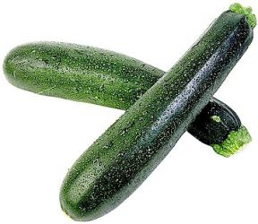

Zucchini
Creating websites with a vegetable
Chisel Wright
Packing Herl
Why?
- I'm inherently lazy
- Static website
- Common
elephants elements across site
- Cut & Paste vs. Common Sense
- Hopefully common sense won...
[any material that should appear in print but not on the slide]
Cut & Paste
- page1.html
- copy
- …
- copy
- page43.html
- …
- I just want to make a small tweak to …
- FAIL!
[any material that should appear in print but not on the slide]
Common Sense?
- Template Toolkit
- header.tt & footer.tt
- variables
- TT plugins
- …
- FTP / rsync
- develop locally
- transfer automagically
- smart copying á la rsync
- Let the machine do the hard work!
[any material that should appear in print but not on the slide]
Common Sense? (cont.)
page1.html
[% include header.tt %]
<h1>Page 1</h1>
<!-- page 1 content -->
[% include header.tt %]
page2.html
[% include header.tt %]
<h1>Page 2</h1>
<!-- page 2 content -->
[% include header.tt %]
[any material that should appear in print but not on the slide]
Generating
First run:
$ zucchini
templating: page1.html
templating: page2.html
$
Second run (nothing changed):
$ zucchini
$
Third run (page2.html changed):
$ zucchini
templating: page2.html
$
Uploading
# smart site that allows rsync/ssh
$ zucchini --rsync
# dumb site that only allows FTP
# (*cough* netsol *cough*)
$ zucchini --fsync
fsync?
- I had to call it something
- digest files
- rsync-over-ftp
- only transfer new and modified files
- faster
- chomps less bandwidth
Issues
- Normal People
- Umm …
- No feedback
- Perfect?
- Nah, probably only one user
- Normal People: don't know how to use perl or
install anything from the CPAN
Questions?

[any material that should appear in print but not on the slide]
More Information
- the CPAN:
- Tutorial
- perldoc Zucchini::Manual::Tutorial
- Me:
- chisel@herlpacker.co.uk
- www.herlpacker.co.uk
- CPANID: CHISEL
[any material that should appear in print but not on the slide]